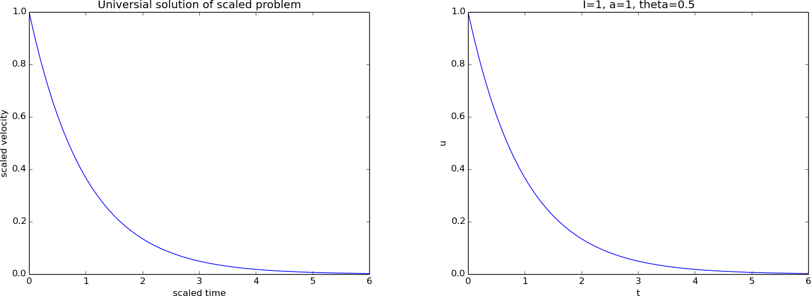
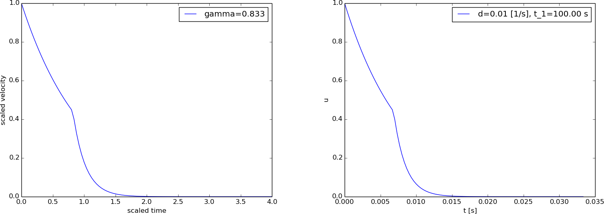
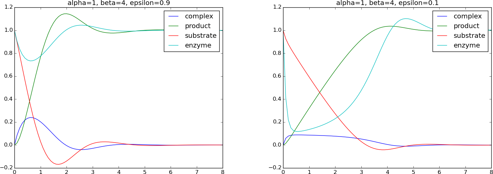

Exponential decay
Processes undergoing exponential reduction can be modeled by the ODE problem $$ \begin{equation} u'(t) = -au(t),\quad u(0)=I, \tag{2} \end{equation} $$ where \( a,I>0 \) are prescribed constants and \( u(t) \) is the unknown function. For this particular model, we can easily derive the solution, \( u(t)=Ie^{-at} \), which is helpful to have in mind during the scaling process.
Example: Population dynamics
The evolution of a population of humans, animals, cells, etc., under unlimited access to resources, can be modeled by (2). Then \( u \) is the number of individuals in the population, strictly speaking an integer, but well modeled by a real number in large populations. The parameter \( a \) is the increase in the number of individuals per time and per individual.
Example: Decay of pressure with altitude
The simple model (2) also governs the pressure in the atmosphere (under many assumptions). In this case \( u \) is the pressure, measured in \( \hbox{Nm}^{-2} \); \( t \) is the hight in meters; and \( a=M/(R^*T) \), where \( M \) is the molar mass of the Earth's air (0.029 kg/mol), \( R^* \) is the universal gas constant (\( 8.314\,\frac{\hbox{Nm}}{\hbox{mol\, K}} \)), and \( T \) is the temperature in Kelvin (K). The temperature depends on the hight so we have \( a=a(t) \).
The technical steps of the scaling procedure
Step 1: Identify independent and dependent variables
There is one independent variable, time \( t \), and one dependent variable, \( u \).
Step 2: Make independent and dependent variables dimensionless
We introduce a new dimensionless \( t \), called \( \bar t \), defined by $$ \begin{equation} \bar t = \frac{t}{t_c}, \end{equation} $$ where \( t_c \) is a characteristic value of \( t \). Similarly, we introduce a dimensionless \( u \), named \( \bar u \), according to $$ \begin{equation} \bar u = \frac{u}{u_c}, \end{equation} $$ where \( u_c \) is a constant characteristic size of \( u \). When \( u \) has a specific interpretation, say when (2) models pressure in an atmospheric layer, \( u_c \) would be referred to as characteristic pressure. For a decaying population, \( u \) may be a characteristic number of members in the population.
Step 3: Derive the model involving only dimensionless variables
The next task is to insert the new dimensionless variables in the governing mathematical model. That is, we replace \( t \) by \( t_c\bar t \) and \( u \) by \( u_c\bar u \) in (2). The derivative with respect to \( \bar t \) is derived as $$ \frac{du}{dt} = \frac{d (u_c\bar u)}{d\bar t}{d\bar t}{dt} = u_c\frac{d\bar u}{d\bar t}\frac{1}{t_c} = \frac{u_c}{t_c}\frac{d\bar u}{d\bar t}\tp $$ The model (2) now becomes $$ \begin{equation} \frac{u_c}{t_c}\frac{d\bar u}{d\bar t} = -au_c\bar u,\quad u_c\bar u(0)=I\tp \tag{3} \end{equation} $$
Step 4: Make each term dimensionless
Equation (3) still has terms with dimensions. To make each term dimensionless, we usually divide by the coefficient in front of the term with the highest time derivative (but dividing by any coefficient will do). The result is $$ \begin{equation} \frac{d\bar u}{d\bar t} = -at_c\bar u,\quad \bar u(0)=u_c^{-1}I \tp \tag{4} \end{equation} $$
Step 5: Estimate the scales
A characteristic quantity like \( t_c \) reflects the time scale in the problem. Estimating such a time scale is certainly the most challenging part of the scaling procedure. There are different ways to reason. The first is to aim at a size of \( \bar u \) and its derivatives that is of order unity. If \( u_c \) is chosen such that \( |\bar u| \) is of size unity, we see from (4) that \( d\bar u/d\bar t \) is of the size of \( \bar u \) (i.e., unity) if we choose \( t_c = 1/a \).
Alternatively, we may look at a special case of the model where we have analytical insight. In the present problem we are lucky to know the exact solution for any value of the input data. For exponential decay, \( u(t)\sim e^{-at} \), it is common to define a characteristic time scale \( t_c \) as the time it takes to reduce \( u \) by a factor of \( 1/e \) (also called the e-folding time): $$ e^{-at_c} = \frac{1}{e}e^{-a\cdot 0}\quad\Rightarrow\quad e^{-at_c}=e^{-1}, $$ from which it follows that \( t_c = 1/a \).
In this example, two different, yet common ways of reasoning, lead to the same value of \( t_c \). However, instead of using the e-folding time we could use the half-time of the exponential decay as characteristic time, which is also a very common measure of the time scale in such processes. The half time is defined as the time it takes to halve \( u \): $$ e^{-at_c} = \frac{1}{2}e^{-a\cdot 0} \quad\Rightarrow\quad t_c = a^{-1}\ln 2\tp$$ There is a factor \( \ln 2 =0.69 \) difference from the other \( t_c \) value. As long as the factor is not an order of magnitude or more different, we do not pay attention to such small differences. Although \( t_c = a^{-1}\ln 2 \) is a fine time scale to be used in this problem, it leads to a scaled differential equation \( u'=-(\ln 2) u \), which is fine, but an unusual form. People tend to prefer \( u'=-u \), which arises from \( t_c=1/a \). We shall therefore use the latter as time scale.
Regarding \( u_c \), we may look at the initial condition and realize that the choice \( u_c=I \) makes \( \bar u(0)=1 \). For \( \bar t>0 \) we know that \( \bar u \) is decreasing, so \( u_c=I \) gives us \( \bar u\leq 1 \), which is always a goal. Alternatively, we may look to analytical insight, \( u(t)=Ie^{-at} \), to see that \( u\leq I \), such that \( u_c=I \) gives \( \bar u\leq 1 \).
With \( t_c=1/a \) and \( u_c=I \), we have the final dimensionless model $$ \begin{equation} \frac{d\bar u}{d\bar t} = -\bar u,\quad \bar u(0)=1 \tp \tag{5} \end{equation} $$ This is a remarkable result in the sense that all physical parameters (\( a \) and \( I \)) are removed from the model! Or more precisely, there are no physical input parameters to assign before using the model. In particular, numerical investigations of the original model (2) would need experiments with different \( a \) and \( I \) values, while numerical investigations of (5) can be limited to a single run! As soon as we have computed the curve \( \bar u(\bar t) \), we can find the solution \( u(t) \) of (2) by $$ \begin{equation} u(t) = u_c\bar u(t/t_c) = I\bar u(at) \tp \tag{6} \end{equation} $$ This particular transformation actually means stretching the \( \bar t \) and \( \bar u \) axes in a plot of \( \bar u(\bar t) \) by the factors \( a \) and \( I \), respectively.
It is very common to drop the bars when the scaled problem has been derived and work further with (5) simply written as $$ \frac{du}{dt} = -u,\quad u(0)=1 \tp $$
Making software utilizing the dimensionless model
Software for solving (2) could take advantage of the fact that only one simulation of (5) is necessary. As soon as we have \( \bar u(\bar t) \) accessible, a simple scaling (6) computes the real \( u(t) \) for any given input data \( a \) and \( I \). Although the numerical computation of \( u(t) \) from (2) is very fast in this simple model problem, using (6) is very much faster than computing a full numerical solution in more complicated differential equation problems.
We can compute with the dimensionless model (5) in two ways, either make a solver for (5) or reuse a solver for (2) with the parameters appropriately set (\( I=1 \), \( a=1 \)). The latter approach has the advantage of giving us software that works both with a dimensionless model and a model with dimensions and all the original physical parameters.
Software for the original problem with dimensions
We base our solver for
(5) on a solver for (2).
Assume that we have some module decay.py that offers the following
functions:
-
solver(I, a, T, dt, theta=0.5)for returning the solution arraysuandtfor (2) solved by the \( \theta \) rule. -
read_command_line_argparse()for reading parameters in the problem from the command line and returning them:I,a,T,theta(\( \theta \)), and a list of \( \Delta t \) values for time steps. (We shall only make use of the first \( \Delta t \) value.)
from decay import solver, read_command_line_argparse
I, a, T, theta, dt_values = read_command_line_argparse()
u, t = solver(I, a, T, dt_values[0], theta)
from matplotlib.pyplot import plot, show
plot(t, u)
show()
The module decay.py is developed and explained in
the document Scientific software engineering; ODE model [5].
To solve the dimensionless problem, just fix \( I=1 \) and \( a=1 \):
I, a, T, theta, dt_values = read_command_line_argparse()
u, t = solver(I=1, a=1, T=T, dt=dt_values[0], theta=theta)
A plain solution
A key observation, as mentioned, is that we need to solve the problem (5) only once. All solutions corresponding to different \( I \) and \( a \) values in the original physical problem can be recovered by scaling this single solution with formula (6). We therefore want to make software that takes advantage of this fact. When requesting a solution, we see if it has already been computed and stored in a file, and if so, the data can be retrieved from file, otherwise we have to compute a new solution and store it in a file.
The computational recipe goes as follows.
- A computed solution \( \bar u(\bar t) \) is stored in a file with name
u_scaled.dat. - The first line in the file contains \( T \), \( \Delta t \), and \( \theta \) used to compute the stored \( \bar u(\bar t) \).
- The \( T \), \( \Delta t \), and \( \theta \) parameters are read from the first line in the file and compared with those required by the user.
- If one of the three parameters changes, the solution in the file must be recomputed.
from decay import solver as solver_unscaled
import numpy as np
def solver_scaled(T, dt, theta):
"""
Solve u'=-u, u(0)=1 for (0,T] with step dt and theta method.
"""
# Is the scaled problem already solved and dimensionless
# curve available from file?
# See if u_scaled.dat has the right parameters.
already_computed = False
datafile = 'u_scaled.dat'
if os.path.isfile(datafile): # does u_scaled.dat exist?
infile = open(datafile, 'r')
infoline = infile.readline() # read the first line
words = infoline.split() # split line into words
T_, dt_, theta_ = [float(w) for w in words]
if T_ == T and dt_ == dt and theta_ == theta:
# The file was computed with the desired data, load
# the solution into arrays
data = np.loadtxt(infile)
u_scaled = data[1,:]
t_scaled = data[0,:]
print 'Read scaled solution from file'
already_computed = True
infile.close()
if not already_computed:
# T, dt or theta is different from u_scaled.dat
u_scaled, t_scaled = \
solver_unscaled(I=1, a=1, T=T, dt=dt, theta=theta)
outfile = open(datafile, 'w')
outfile.write('%f %f %.1f\n' % (T, dt, theta))
np.savetxt(outfile, np.array([t_scaled, u_scaled]))
outfile.close()
print 'Computed scaled solution'
return u_scaled, t_scaled
def unscale(u_scaled, t_scaled, I, a):
return I*u_scaled, a*t_scaled
The np.savetxt function saves a two-dimensional arrays ("table") to
a text file, and the np.loadtxt function can load the data back
into the program.
Simplifying the implementation with joblib
The Python package joblib has functionality that is very convenient
for implementing the solver_scaled function. The first time a
function is called with a set of arguments, the statements in the
function are executed and the return value is saved to file. If the
function is called again with the same set of arguments, the
statements in the function are not executed, but the return value is
read from file. In computer science, one would say that joblib in
this way provides memorization functionality for Python functions.
This functionality is particularly aimed at large-scale computations
with arrays that one would like to avoid being recomputed.
Utilizing joblib, our solver_scaled function can be dramatically
simplified:
def solver_scaled(T, dt, theta):
"""
Solve u'=-u, u(0)=1 for (0,T] with step dt and theta method.
"""
print 'Computing the numerical solution'
return solver_unscaled(I=1, a=1, T=T, dt=dt, theta=theta)
Then we create some "computer memory on disk", i.e., some disk space to
store the result of a call to the solver_scaled function. Thereafter,
we redefine the name solver_scaled to a new function, created
by joblib, which calls our original solver_scaled function
if necessary and otherwise loads data from file:
import joblib
disk_memory = joblib.Memory(cachedir='temp')
solver_scaled = disk_memory.cache(solver_scaled)
The solutions are actually stored in files in the directory temp.
A typical use case is to read values from the command line, solve the unscaled problem (if necessary), scale the solution, and visualize the solution with dimension:
def main():
# Read parameters, solve and plot
I, a, T, theta, dt_values = read_command_line_argparse()
dt = dt_values[0] # use only the first dt value
u_scaled, t_scaled = solver_scaled(T, dt, theta)
u, t = unscale(u_scaled, t_scaled, I, a)
plt.figure()
plt.plot(t_scaled, u_scaled)
plt.xlabel('scaled time'); plt.ylabel('scaled velocity')
plt.title('Universial solution of scaled problem')
plt.savefig('tmp1.png'); plt.savefig('tmp1.pdf')
plt.figure()
plt.plot(t, u)
plt.xlabel('t'); plt.ylabel('u')
plt.title('I=%g, a=%g, theta=%g' % (I, a, theta))
plt.savefig('tmp2.png'); plt.savefig('tmp2.pdf')
plt.show()
The complete code resides in the file decay_scaled.py.
Note that we write a message Computing the numerical solution inside
the solver_scaled function. We can then easily detect when
the solution is actually computed and when it is simply read from file.
Here is a demo:
Terminal> # Very first run
Terminal> python decay_scaled.py --T 7 --a 1 --I 0.5 --dt 0.2
[Memory] Calling __main__--home-hpl...
solver_scaled-alias(7.0, 0.2, 0.5)
Computing the numerical solution
Terminal> # No change of T, dt, theta - can reuse solution in file
Terminal> python decay_scaled.py --T 7 --a 4 --I 2.5 --dt 0.2
Terminal> # Change of dt, must recompute
Terminal> python decay_scaled.py --T 7 --a 4 --I 2.0 --dt 0.5
[Memory] Calling __main__--home-hpl...
solver_scaled-alias(7.0, 0.5, 0.5)
Computing the numerical solution
Terminal> # Change of dt again, but dt=0.2 is already in a file
Terminal> python decay_scaled.py --T 7 --a 0.5 --I 1 --dt 0.2
We realize that joblib has access to all previous runs and does not
recompute unless it is strictly required. Our previous implementation
without joblib
used only one file (for one numerical case)
and will therefore perform many more calls to
solver_unscaled.
A plot of the scaled and unscaled solution appears in Figure 2.
Figure 2: Scaled (left) and unscaled (right) exponential decay.

class Memoize:
def __init__(self, f):
self.f = f
self.memo = {} # map arguments to results
def __call__(self, *args):
if not args in self.memo:
self.memo[args] = self.f(*args)
return self.memo[args]
# Wrap my_compute_function(arg1, arg2, ...)
my_compute_function = Memoize(my_compute_function)
The memoize functionality in joblib.Memory is more sophisticated and
can work very efficiently with large array data structures as arguments.
Note that the simple version above can only be used when all arguments to
the function f are immutable (since the key in a dictionary has to be
immutable).
Scaling a generalized problem
Now we consider an extension of the exponential decay ODE to the form $$ \begin{equation} u'(t) = -au(t) + b,\quad u(0)=I \tag{7} \tp \end{equation} $$ One particular model, with constant \( a \) and \( b \), is a spherical micro-organism falling in air, $$ \begin{equation} u' = - \frac{3\pi d\mu}{\varrho_b V} u + g\left(\frac{\varrho}{\varrho_b} -1\right), \tag{8} \end{equation} $$ where \( d \), \( \mu \), \( \varrho_b \), \( \varrho \), \( V \), and \( g \) are physical parameters. The function \( u(t) \) represents the vertical velocity, being positive upwards. We shall use this model in the following.
Exact solution
It can be handy to have the exact solution for reference, in case of constant \( a \) and \( b \): $$ \uex(t) = \frac{e^{-at}}{a}\left( b(e^{at}-1) + aI\right) \tp $$
It can be very handy to use a symbolic computation tool such as SymPy to aid us in solving differential equations. Let us therefore demonstrate how SymPy can be used to find this solution. First we define the parameters in the problem as symbols and \( u(t) \) as a function:
>>> from sympy import *
>>> t, a, b, I = symbols('t a b I', real=True, positive=True)
>>> u = symbols('u', cls=Function)
The next task is to define the differential equation, either as
a symbolic expression that is to equal zero, or as
an equation Eq(lhs, rhs) with lhs and rhs as expressions for
the left- and right-hand side):
>>> # Define differential equation
>>> eq = diff(u(t), t) + a*u(t) - b
>>> # or
>>> eq = Eq(diff(u(t), t), -a*u(t) + b)
The differential equation can be solved by the dsolve function, yielding
an equation of the form u(t) == expression. We want to grab the
expression on the right-hand side as our solution:
>>> sol = dsolve(eq, u(t))
>>> print sol
u(t) == (b + exp(a*(C1 - t)))/a
>>> u = sol.rhs # grab solution
>>> print u
(b + exp(a*(C1 - t)))/a
The solution contains the unknown integration constant C1, which must
be determined by the initial condition. We form the equation arising
from the initial condition \( u(0)=I \):
>>> C1 = symbols('C1')
>>> eq = Eq(u.subs(t, 0), I) # substitute t by 0 in u
>>> sol = solve(eq, C1)
>>> print sol
[log(I*a - b)/a]
The one solution that was found must then be substituted back in the
expression u to yield the final solution:
>>> u = u.subs(C1, sol[0])
>>> print u
(b + exp(a*(-t + log(I*a - b)/a)))/a
As in mathematics with pen and paper, we strive to simplify expressions also in symbolic computing software. This frequently requires some trial and error process with SymPy's simplification functions. A very standard first try is to expand everything and run simplification algorithms:
>>> u = simplify(expand(u))
>>> print u
(I*a + b*exp(a*t) - b)*exp(-a*t)/a
Note that doing latex(u) automatically converts the expression to LaTeX syntax
for inclusion in reports.
Theory
The challenges in our scaling is to find the right \( u_c \) and \( t_c \) scales. From (7) we see that if \( u'\rightarrow 0 \) as \( t\rightarrow\infty \), \( u \) approaches the constant value \( b/a \). It can be convenient to let the scaled \( \bar u\rightarrow 1 \) as we approach the \( d\bar u/d\bar t = 0 \) state. This idea points to choosing $$ \begin{equation} u_c = \frac{b}{a} = g\left(\frac{\varrho}{\varrho_b} -1\right)\left(\frac{3\pi d\mu}{\varrho_b V}\right)^{-1} \tp \end{equation} $$
Inserting \( u = u_c\bar u = b\bar u/a \) and \( t=t_c\bar t \) in (7) leads to $$ \frac{d\bar u}{d\bar t} = -t_c a\bar u + \frac{t_c}{u_c}b, \quad \bar u(0) = I\frac{a}{b} \tp $$ We want the scales such that \( d\bar u/d\bar t \) and \( \bar u \) are about unity. To balance the size of \( \bar u \) and \( d\bar u/d\bar t \) we must therefore choose \( t_c = 1/a \), resulting in the scaled ODE problem $$ \begin{equation} \frac{d\bar u}{d\bar t} = -\bar u + 1,\quad u(0)=\beta, \tag{9} \end{equation} $$ where \( \beta \) is a dimensionless number, $$ \begin{equation} \beta = \frac{I}{u_c} = I\frac{a}{b}, \end{equation} $$ reflecting the ratio of the initial velocity and the terminal (\( t\rightarrow \infty \)) velocity \( b/a \). Scaling normally ends up with one or more dimensionless parameters, such as \( \beta \) here, containing ratios of physical effects in the model. Many more examples on dimensionless parameters will appear in later sections.
The analytical solution of the scaled model (9) reads $$ \begin{equation} \bar\uex(t) = e^{-t}\left( e^{t}-1 + \beta\right) = 1 + (\beta -1)e^{-t}\tp \tag{10} \end{equation} $$
The result (9) with the
solution (10) is actually
astonishing if \( a \) and \( b \) are as in (8):
the six parameters \( d \), \( \mu \), \( \varrho_b \), \( \varrho \), \( V \), and \( g \)
are conjured to one:
$$ \beta = I\frac{3\pi d\mu}{\varrho_b V}
\frac{1}{g}\left(\frac{\varrho}{\varrho_b} -1\right)^{-1},
$$
which is an enormous simplification of the problem if our aim is to
investigate how \( u \) varies with the physical input parameters in
the model.
In particular, if the motion starts from rest, \( \beta=0 \), and
there are no physical parameters in the scaled model!
We can then perform a single simulation and recover all physical
cases by the unscaling procedure. More precisely,
having computed \( \bar u(\bar t) \) from (9),
we can use
$$
\begin{equation}
u(t) = \frac{b}{a}\bar u(at),
\end{equation}
$$
to scale us back to the original
problem again.
We observe that (9) can utilize a solver
for (7) by setting \( a=1 \), \( b=1 \), and \( I=\beta \).
Given some implementation of a solver for (7),
say solver(I, a, b, T, dt, theta),
the scaled model is run by solver(beta, 1, 1, T, dt, theta).
Software
We may develop a solver for the scaled problem that uses joblib
to cache solutions with the same \( \beta \), \( \Delta t \), and \( T \).
For now we fix \( \theta=0.5 \).
The module decay_vc.py has a function
solver(I, a, b, T, dt, theta) for solving \( u'(t)=-a(t)u(t)+b(t) \) for
\( t\in (0,T] \), \( u(0)=I \), with time step dt.
We reuse this function and call it with \( a=b=1 \) and \( I=\beta \) to solve
the scaled problem:
from decay_vc import solver as solver_unscaled
def solver_scaled(beta, T, dt, theta=0.5):
"""
Solve u'=-u+1, u(0)=beta for (0,T]
with step dt and theta method.
"""
print 'Computing the numerical solution'
return solver_unscaled(
I=beta, a=lambda t: 1, b=lambda t: 1,
T=T, dt=dt, theta=theta)
import joblib
disk_memory = joblib.Memory(cachedir='temp')
solver_scaled = disk_memory.cache(solver_scaled)
If we want to plot the physical solution, we need an unscale function,
def unscale(u_scaled, t_scaled, d, mu, rho, rho_b, V):
a, b = ab(d, mu, rho, rho_b, V)
return (b/a)*u_scaled, a*t_scaled
def ab(d, mu, rho, rho_b, V):
g = 9.81
a = 3*pi*d*mu/(rho_b*V)
b = g*(rho/rho_b - 1)
return a, b
Looking at droplets of water in air, we can fix some of the parameters
and let the size parameter \( d \) be the one for experimentation.
The following function sets physical parameters, computes \( \beta \),
runs the solver for the scaled problem (joblib detects
if it is necessary), and finally plots the scaled curve
\( \bar u(\bar t) \) and the unscaled curve \( u(t) \).
def main(dt=0.075, # Time step, scaled problem
T=7.5, # Final time, scaled problem
d=0.001, # Diameter (unscaled problem)
I=0, # Initial velocity (unscaled problem)
):
# Set parameters, solve and plot
rho = 0.00129E+3 # air
rho_b = 1E+3 # density of water
mu = 0.001 # viscosity of water
# Asumme we have list or similar for d
if not isinstance(d, (list,tuple,np.ndarray)):
d = [d]
legends1 = []
legends2 = []
plt.figure(1)
plt.figure(2)
betas = [] # beta values already computed (for plot)
for d_ in d:
V = 4*pi/3*(d_/2.)**3 # volume
a, b = ab(d_, mu, rho, rho_b, V)
beta = I*a/b
# Restrict to 3 digits in beta
beta = abs(round(beta, 3))
print 'beta=%.3f' % beta
u_scaled, t_scaled = solver_scaled(beta, T, dt)
# Avoid plotting curves with the same beta value
if not beta in betas:
plt.figure(1)
plt.plot(t_scaled, u_scaled)
plt.hold('on')
legends1.append('beta=%g' % beta)
betas.append(beta)
plt.figure(2)
u, t = unscale(u_scaled, t_scaled, d_, mu, rho, rho_b, V)
plt.plot(t, u)
plt.hold('on')
legends2.append('d=%g [mm]' % (d_*1000))
plt.figure(1)
plt.xlabel('scaled time'); plt.ylabel('scaled velocity')
plt.legend(legends1, loc='lower right')
The most complicated part of the code is related to plotting, but this part can be skipped when trying to understand how we work with a scaled model to perform the computations. The complete program is found in the file falling_body.py.
Since \( I=0 \) implies \( \beta=0 \), we can run different \( d \) values without any need to recompute \( \bar u(\bar t) \) as long as we assume the particle starts from rest.
From the scaling, we see that \( u_c = b/a\sim d^{-2} \) and also that \( t_c=1/a \sim d^{-2} \), so plotting of \( u(t) \) with dimensions for various \( d \) values will involve significant variations in the time and velocity scales. Figure 3 has an example with \( d=1,2,3 \) mm, where we clearly see the different time and velocity scales in the figure with unscaled variables. Note that the scaled velocity is positive because of the sign of \( u_c \) (see the box above).
Figure 3: Velocity of falling body: scaled (left) and with dimensions (right).

Variable coefficients
When a prescribed coefficient like \( a(t) \) in \( u'(t) = -a(t)u(t) \) varies with time one usually also performs a scaling of this \( a \), $$ \bar a(\bar t) = \frac{a(t) - a_0}{a_c}, $$ where the goal is to have the scaled \( |\bar a| \) of size unity: \( |\bar a|\leq 1 \). This property is obtained by choosing \( a_c \) as the maximum value of \( |a(t)-a_0| \) for \( t\in [0,T] \), which is usually a quantity that can be estimated since \( a(t) \) is known as a function of \( t \). The \( a_0 \) parameter can be chosen as 0 here. (It could be tempting to choose \( a_0=\min_t a(t) \) so that \( 0\leq \bar a\leq 1 \), but then there is at least one point where \( \bar a = 0 \) and the differential equation collapses to \( u'=0 \).)
As an example, imagine a decaying cell culture where we at time \( t_1 \) change the environment such that the death rate increases: \( a(t) = d \) for \( t < t_1 \) and \( a(t)=5d \) for \( t\geq t_1 \). The model reads \( u'=-a(t)u \), \( u(0)=I \).
The \( a(t) \) function is scaled by letting the characteristic size be \( a_c=d \) (and \( a_0=0 \)): $$ \bar a (\bar t) = \left\lbrace\begin{array}{ll} 1, & \bar t < t_1/t_c\\ 5, & \bar t \geq t_1/t_c \end{array}\right. $$
The scaled equation becomes $$ \frac{u_c}{t_c}\frac{d\bar u}{d\bar t} = a_c\bar a(\bar t) u_c\bar u,\quad u_c\bar u(0) = I\tp$$ The characteristic time, previously taken as \( t_c=1/a \), can now be taken as \( t_c=t_1 \) or \( t_c=1/d \). The natural choice of \( u_c \) is \( I \). With \( t_c=1/d \) we get $$ \begin{equation} \bar u'(\bar t)=-\bar a\bar u,\quad \bar u(0)=1,\quad \bar a = \left\lbrace\begin{array}{ll} 1, & \bar t < \gamma\\ 5, & \bar t \geq \gamma \end{array}\right. \tag{11} \end{equation} $$ where $$ \gamma = t_1 d$$ is a dimensionless number in the problem. With \( t_c=t_1 \), we get $$ \bar u'(\bar t)=-\gamma\bar a\bar u,\quad \bar u(0)=1,\quad \bar a = \left\lbrace\begin{array}{ll} 1, & \bar t < 1\\ 5, & \bar t \geq 1 \end{array}\right.$$ The dimensionless parameter \( \gamma \) is now in the equation rather than in the definition of \( \bar a \). Both problems involve \( \gamma \), which is the ratio between the time when the environmental change happens and the typical time for the decay (\( 1/d \)).
A computation with the scaled model (11) and the original model with dimensions appears in Figure 4.
Figure 4: Exponential decay with jump.

Scaling a cooling problem with constant surroundings
The heat exchange between a body at temperature \( T(t) \) and the surroundings at \( T_s(t) \) can be modeled by Newton's law of cooling: $$ \begin{equation} T'(t) = -k(T-T_s(t)),\quad T(0)=T_0, \tag{12} \end{equation} $$ where \( k \) is a prescribed heat transfer coefficient. An analytical solution is always handy to have as a control of the choice of scales. Here we have the result \( T(t) = T_s + (T_0 - T_s)e^{-kt} \) when \( T_s \) is constant, which is also the assumption for now.
Physically, we expect the temperature to start at \( T_0 \) and then to move toward the surroundings (\( T_s \)). We therefore expect that \( T \) lies between \( T_0 \) and \( T_s \). This is mathematically demonstrated by the analytical solution as well. A proper scaling is therefore to scale and translate \( T \) according to $$ \begin{equation} \bar T = \frac{T-T_0}{T_s-T_0} \tag{13} \tp \end{equation} $$ Now, \( 0\leq \bar T\leq 1 \).
Scaling time by \( \bar t = t/t_c \) and inserting \( T= T_0 + (T_s-T_0)\bar T \) and \( t=t_c\bar t \) in the problem (12) gives $$ \frac{d\bar T}{d\bar t} = - t_ck(\bar T - 1),\quad \bar T(0) = 0 \tp $$ A natural choice, as argued in other exponential decay problems, is to choose \( t_ck=1 \), which leaves us with the scaled problem $$ \begin{equation} \frac{d\bar T}{d\bar t} = - (\bar T - 1),\quad \bar T(0)=0 \tag{14} \tp \end{equation} $$ No physical parameter enters this problem! Our scaling implies that \( \bar T \) starts at 0 and approaches 1 as \( \bar t\rightarrow\infty \), also in the case \( T_s < T_0 \). The physical temperature is always recovered as $$ \begin{equation} T(t) = T_0 + (T_s-T_0)\bar T (k\bar t) \tag{15} \tp \end{equation} $$ An implementation for (12) works for (14) by setting \( k=1 \), \( T_s=1 \), and \( T_0=0 \).
An alternative scaling is to choose $$ \begin{equation} \bar T = \frac{T-T_s}{T_0-T_s} \tag{16} \tp \end{equation} $$ Now \( \bar T=1 \) initially and approaches zero as \( t\rightarrow\infty \). The resulting scaled ODE problem then becomes $$ \begin{equation} \frac{d\bar T}{d\bar t} = - \bar T,\quad \bar T(0)=1 \tag{17} \tp \end{equation} $$
Scaling a cooling problem with time-dependent surroundings
Let us apply the model (12) in case the surrounding temperature varies in time. Say we have an oscillating temperature environment according to $$ \begin{equation} T_s(t) = T_m + a\sin(\omega t) \tag{18} \tp \end{equation} $$
Exact solution
It is possible to solve the differential equation problem analytically, and such a solution is a good help to see what scales are. In general, using the method of integrating factors for the original differential equation, we have $$ T(t) = T_0e^{-kt} + e^{-kt}k\int_0^t e^{k\tau}T_s(\tau)d\tau\tp$$ With \( T_s(t)=T_m + a\sin (wt) \) we can use SymPy to help us with integrations:
>>> from sympy import *
>>> t, k, T_m, a, w = symbols('t k T_m a w', real=True, positive=True)
>>> T_s = T_m + a*sin(w*t)
>>> I = exp(k*t)*T_s
>>> I = integrate(I, (t, 0, t))
>>> Q = k*exp(-k*t)*I
>>> Q = simplify(expand(Q))
>>> print Q
(-T_m*k**2 - T_m*w**2 + a*k*w +
(T_m*k**2 + T_m*w**2 + a*k**2*sin(t*w) -
a*k*w*cos(t*w))*exp(k*t))*exp(-k*t)/((k**2 + w**2))
Reordering the result, we get $$ T(t) = T_0e^{-kt} + T_m(1- e^{-kt}) + (k^2 + w^2)^{-1}(akw e^{-kt} + ak\sin (wt) - akw\cos(wt))\tp$$
Scaling
The scaling (13) brings in a time-dependent characteristic temperature scale \( T_s-T_0 \). Let us start with a fixed scale, where we take the characteristic temperature variation to be \( T_m - T_0 \): $$ \bar T = \frac{T-T_0}{T_m-T_0}\tp$$ We see from the analytical solution, and realize also by physical reasoning, that \( T \) sets out at \( T_0 \), but with time, it will oscillate around \( T_m \). The typical average temperature span is therefore \( |T_m-T_0| \).
We get from the differential equation, with \( t_c=1/k \) as in the former case, $$ k(T_m-T_0)\frac{d\bar T}{d\bar t} = -k((T_m-T_0)\bar T + T_0 - T_m - a \sin(wt),$$ resulting in $$ \begin{equation} \frac{d\bar T}{d\bar t} = -\bar T + 1 + \alpha\sin (\beta \bar t),\quad \bar T(0)=0, \tag{19} \end{equation} $$ where we have two dimensionless numbers: $$ \alpha = \frac{a}{T_m-T_0},\quad \beta = \frac{w}{k}\tp$$ The \( \alpha \) quantity measures the ratio of temperatures: amplitude of oscillations versus characteristic total temperature variation. The \( \beta \) number is the ratio of the two time scales: the frequency of the oscillations in \( T_s \) and the inverse e-folding time of the heat transfer. For clear interpretation of \( \beta \) we may introduce the period \( P=2\pi/w \) of the oscillations in \( T_s \) and the e-folding time \( e=1/k \). Then \( \beta = 2\pi e/P \) and measures the period versus the e-folding time.
The original problem features five physical parameters: \( k \), \( T_0 \), \( T_m \), \( a \), and \( w \), but only two dimensionless numbers appear in the scaled model.
Software
Implementing the unscaled problem (12) can be reused for the scaled model by setting \( k=1 \), \( T_0=0 \), and \( T_s(t) = 1 + \alpha\sin (\beta \bar t) \) (\( T_m=1 \), \( a=\alpha \), \( w=\beta \)).
Discussion of the time scale
Looking at the analytical insight we have, \( T(t) \) has two characteristic terms in time: \( e^{-kt} \) and \( \sin(wt) \). The former points to a time scale \( t_c=1/k \), while the latter to \( t_c=1/w \). Which one should be chosen? Bringing the temperature from \( T_0 \) to the level of the surroundings, \( T_m \), goes like \( e^{-kt} \), so in this process \( t_c=1/k \) is the characteristic time. Thereafter, the body's temperature just responds to the oscillations and the \( \sin (wt) \) (and \( \cos(wt) \)) term dominates. For these large times, \( t_c=1/w \) is the appropriate time scale. Choosing \( t_c=1/w \) results in $$ \begin{equation} \frac{d\bar T}{d\bar t} = -\beta^{-1}(\bar T - (1 + \alpha\sin (\bar t))),\quad \bar T(0)=0\tp \tag{20} \end{equation} $$
Let us illustrate another, less effective, scaling. The temperature scale in (13) looks natural, so we apply this choice of scale. The characteristic temperature \( T_0-T_s \) now involves a time-dependent term \( T_s(t) \). The mathematical steps become a bit more technically involved: $$ T(t) = T_0 + (T_s(t)-T_0)\bar T,$$ $$ \frac{dT}{dt} = \frac{dT_s}{dt}\bar T + (T_s-T_0)\frac{d\bar T}{d\bar t}\frac{d\bar t}{dt} \tp $$ With \( \bar t = t/t_c = kt \) we get from the differential equation $$ \frac{dT_s}{dt}\bar T + (T_s-T_0)\frac{d\bar T}{d\bar t}k = -k(\bar T - 1)(T_s - T_0), $$ which after dividing by \( k(T_s-T_0) \) results in $$ \frac{d\bar T}{d\bar t} = -(\bar T - 1) - \frac{dT_s}{dt}\frac{\bar T}{k(T_s-T_0}, $$ or $$ \frac{d\bar T}{d\bar t} = -(\bar T - 1) - \frac{a\omega\cos(\omega \bar t/k)}{k(T_m + a\sin(\omega \bar t/k) -T_0)}\bar T \tp $$ The last term is complicated and becomes more tractable if we factor out dimensionless numbers. To this end, we scale \( T_s \) by (e.g.) \( T_m \), which means to factor out \( T_m \) in the denominator. We are then left with $$ \begin{equation} \frac{d\bar T}{d\bar t} = -(\bar T - 1) - \alpha\beta \frac{\cos(\beta \bar t)}{1 + \alpha\sin(\beta\bar t) - \gamma} \bar T, \tag{21} \end{equation} $$ where \( \alpha \), \( \beta \), and \( \gamma \) are dimensionless numbers characterizing the relative importance of parameters in the problem: $$ \begin{equation} \alpha=a/T_m,\quad \beta = \omega/k,\quad \gamma = T_0/T_m \tp \end{equation} $$ We notice that (21) is not a special case of the original problem (12). Furthermore, the original five parameters \( k \), \( T_m \), \( a \), \( \omega \), and \( T_0 \) are reduced to three dimensionless parameters. We conclude that this scaling is inferior, because using the temperature scale \( T_0-T_m \) enables reuse of the software for the unscaled problem and only two dimensionless parameters appear in the scaled model.
Scaling a nonlinear ODE
Exponential growth models, \( u'=au \), are not realistic in environments with limited resources. The idea is then to assume that the growth rate \( a \) decreases with \( u \) and vanishes when we reach the maximum value \( M \) of \( u \) the environment can sustain. The initial growth rate is set to \( r \): \( a(0)=\varrho \). In general, this reasoning gives rise to models $$ \begin{equation} u' = a(u)u,\quad u(0)=I, \tag{22} \end{equation} $$ with the logistic model, corresponding to \( a(u)=\varrho(1-u/M) \), as the simplest: $$ \begin{equation} u' = \varrho u(1-u/M),\quad u(0)=I\tp \tag{23} \end{equation} $$ A general choice of \( a \) might be \( a(u)=\varrho(1-u/M)^p \) for some exponent \( p \).
Let us scale (22) with \( a(u)=\varrho (1-u/M)^p \). The natural scale for \( u \) is \( M \) (\( u_c=M \)), since we know that \( 0 < u\leq M \), and this makes the dimensionless \( \bar u = u/M \in (0,1] \). The function \( a(u) \) is typically varying between 0 and \( \varrho \), so it can be scaled as $$ \bar a(\bar u) = \frac{a(u)}{\varrho} = (1 - \frac{u}{M})^p = (1 - \bar u)^p\tp$$ Time is scaled as \( \bar t = t/t_c \) for some suitable characteristic time \( t_c \). Inserted in (22), we get $$ \frac{u_c}{t_c}\frac{d\bar u}{d\bar t} = \varrho\bar a u_c\bar u,\quad u_c\bar u(0)=I,$$ resulting in $$ \frac{d\bar u}{d\bar t} = t_c \varrho (1 - \bar u)^p \bar u,\quad \bar u(0) =\frac{I}{M}\tp$$ A natural choice is \( t_c =1/\varrho \) as in other exponential growth models since it leads to the term on the right-hand side to be about unity, as the left-hand side, if the scaling is physically correct. Introducing the dimensionless parameter $$ \alpha = \frac{I}{M},$$ measuring the fraction of the initial population compared to the maximum one, we get the dimensionless model $$ \begin{equation} \frac{d\bar u}{d\bar t} = (1 - \bar u)^p \bar u,\quad \bar u(0) =\alpha\tp \tag{24} \end{equation} $$ Here, we have two dimensionless parameters: \( \alpha \) and \( p \). A classical logistic model with \( p=1 \) has only one dimensionless variable.
We could try another scaling of \( u \) where we also translate \( \bar u \): $$ \bar u = \frac{u-I}{M}\tp $$ This choice of \( \bar u \) results in $$ \begin{equation} \frac{d\bar u}{d\bar t} = (1 - \alpha - \bar u)^p \bar u,\quad \bar u(0) =0\tp \tag{25} \end{equation} $$ The essential difference between (24) and (25) is that \( \bar u\in [\alpha, 1] \) in the former and \( \bar u \in [0, 1-\alpha] \) in the latter. Both models involve the dimensionless numbers \( \alpha \) and \( p \). An advantage of (24) is that software for the unscaled model can easily be used for the scaled model by choosing \( I=\alpha \), \( M=1 \), and \( \varrho=1 \).
ODE systems for spreading of diseases
The field of epidemiology frequently applies ODE systems to describe the spreading of diseases, such as smallpox, measles, plague, ordinary flu, swine flu, and HIV. Different models include different effects, which are reflected in dimensionless numbers. Most of the effects are modeled as exponential decay or growth of the dependent variables.
SIR model
The model has three categories of people: susceptibles (S) who can get the disease, infected (I) who are infected and may infect susceptibles, and recovered (R) who have recovered from the disease and gained immunity. We introduce \( S(t) \), \( I(t) \), and \( R(t) \) as the number of people in the categories S, I, and R, respectively. The model, naturally known as the SIR model, takes the form a system of ODEs: $$ \begin{align} \frac{dS}{dt} &= - \beta SI, \tag{26}\\ \frac{dI}{dt} &= \beta SI - \nu I, \tag{27}\\ \frac{dR}{dt} &= \nu I, \tag{28} \end{align} $$ where \( \beta \) and \( nu \) are empirical constants. The average time for recovering from the disease can be shown to be \( \nu^{-1} \), but \( \beta \) is much harder to estimate, so working with a scaled model where \( k \) is "scaled away" is advantageous. Adding (26)-(28) shows that $$ \frac{dS}{dt}+\frac{dI}{dt}+\frac{dR}{dt}=0\quad\Rightarrow\quad S+I+R=\hbox{const}=N,$$ where \( N \) is the size of the population. It is natural to scale \( S \), \( I \), and \( R \) by, e.g., \( S(0) \): $$ \bar S = \frac{S}{S(0)},\quad \bar I = \frac{I}{S(0)},\quad \bar R = \frac{R}{S(0)}\tp $$ Introducing \( \bar t = t/t_c \), we arrive at the equations $$ \begin{align*} \frac{d\bar S}{d\bar t} &= - t_c S(0) \beta\bar S\bar I, \\ \frac{d\bar I}{d\bar t} &= t_c S(0) \beta \bar S\bar I - t_c \nu \bar I, \\ \frac{d\bar R}{d\bar t} &= t_c \nu I, \end{align*} $$ with initial conditions \( \bar S(0)=1 \), \( \bar I(0)=I_0/S(0)=\alpha \), and \( \bar R(0)=R(0)/S(0) \). Normally, \( R(0)=0 \).
Taking \( t_c=1/\nu \), corresponding to a time unit equal to the time it takes to recover from the disease, we end up with the scaled model $$ \begin{align} \frac{d\bar S}{d\bar t} &= - R_0\bar S\bar I, \tag{29}\\ \frac{d\bar I}{d\bar t} &= R_0 \bar S\bar I - \bar I, \tag{30}\\ \frac{d\bar R}{d\bar t} &= I, \tag{31} \end{align} $$ with \( \bar S(0)=1 \), \( \bar I(0)=\alpha \), \( \bar R(0)=0 \), and \( R_0 \) as the dimensionless number $$ \begin{equation} R_0 = \frac{S(0)\beta}{\nu}\tp \end{equation} $$ We see from (30) that to make the disease spreading, \( d\bar I/d\bar t >0 \), and therefore \( R_0 S(0) - 1 > 0 \) or \( R_0 > 1 \) since \( S(0)=1 \). Therefore, \( R_0 \) reflects the disease's ability to spread and is consequently an important dimensionless quantity, known as the basic reproductive number. (hpl 1: Explain interpretation.)
Looking at (27), we see that to increase \( I \) initially, we must have \( dI/dt >0 \) at \( t=0 \), which implies \( \beta I(0)S(0) - \nu I(0) >0 \), i.e., \( R_0 > 1 \).
We can also scale \( S \), \( I \), and \( R \) by the total population \( N=S(0)+I(0)+R(0) \), $$ \bar S = \frac{S}{N},\quad \bar I = \frac{I}{N},\quad \bar R = \frac{R}{N)}\tp $$ With the same time scale, one gets the system (29)-(31), but with \( R_0 \) replaced by the dimensionless number: $$ \begin{equation} \tilde R_0 = \frac{N\beta}{\nu}\tp \end{equation} $$ The initial conditions become \( \bar S(0)=1-\alpha \), \( \bar I(0)=\alpha \), and \( \bar R(0)=0 \).
For the disease to spread at \( t=0 \), we must have \( \tilde R_0 \bar S(0) > 1 \), but \( \tilde R_0 \bar S(0) = N\beta/\nu \cdot S(0)/N = R_0 \), so the criterion is still \( R_0 > 1 \). Since \( R_0 \) is a more famous number than \( \tilde R_0 \), we can write the ODEs with \( R_0/S(0) = R_0/(1-\alpha) \) instead of \( \tilde R_0 \).
Choosing \( t_c \) to make the \( SI \) terms balance the time derivatives, \( t_c = (N\beta)^{-1} \), moves \( \tilde R_0 \) (or \( R_0 \) if we scale \( S \), \( I \), and \( R \) by \( S(0) \)) to the \( I \) terms: $$ \begin{align*} \frac{d\bar S}{d\bar t} &= - \bar S\bar I, \\ \frac{d\bar I}{d\bar t} &= \bar S\bar I - \tilde R_0^{-1} \bar I, \\ \frac{d\bar R}{d\bar t} &= \tilde R_0^{-1} I\tp \end{align*} $$
SIRV model with finite immunity
A common extension of the SIR model involves finite immunity: after some period of time, recovered individuals lose their immunity and become susceptibles again. This is modeled as a leakage \( -\mu R \) from the R to the S category, where \( \mu^{-1} \) is the average time it takes to lose immunity. Vaccination is another extension: a fraction \( pS \) is removed from the S category by successful vaccination and brought to a new category V (the vaccinated). The ODE model reads $$ \begin{align} \frac{dS}{dt} &= - \beta SI - pS + \mu R, \tag{32}\\ \frac{dI}{dt} &= \beta SI - \nu I, \tag{33}\\ \frac{dR}{dt} &= \nu I -\mu R, \tag{34}\\ \frac{dV}{dt} &= p S\tp \tag{35} \end{align} $$ Using \( t_c=1/\nu \) and scaling the unknowns by \( S(0) \) leads to the dimensionless model $$ \begin{align} \frac{d\bar S}{d\bar t} &= - R_0 \bar S \bar I - \delta S + \gamma \bar R, \tag{36}\\ \frac{d\bar I}{d\bar t} &= R_0 \bar S \bar I - \bar I, \tag{37}\\ \frac{d\bar R}{d\bar t} &= \bar I -\gamma \bar R, \tag{38}\\ \frac{d\bar V}{d\bar t} &= \delta \bar S, \tag{39} \end{align} $$ with two new dimensionless parameters: $$ \gamma = \frac{\mu}{\nu},\quad \delta = \frac{p}{\nu}\tp $$ The quantity \( p^{-1} \) can be interpreted as the average time it takes to vaccinate a susceptible successfully. Writing \( \gamma = \nu^{-1}/\mu^{-1} \) and \( \delta = \nu^{-1}/p^{-1} \) gives the interpretation that \( \gamma \) is the ratio of the average time to recover and the average time to lose immunity, while \( \delta \) is the ratio of the average time to recover and the average time to successfully vaccinate a susceptible.
Michaelis-Menten kinetics for biochemical reactions
A classical reaction model in biochemistry describes how a substrate S is turned into a product P with aid of an enzyme E. S and E react to form a complex ES in the first stage of the reaction. In the second stage, ES is turned into E and P. Introducing the amount of S, E, ES, and P by \( [S] \), \( [E] \), \( [ES] \), and \( [P] \), the mathematical model can be written as $$ \begin{align} \frac{d[ES]}{dt} &= k_+[E][S] - k_v[ES] - k_-[ES], \tag{40}\\ \frac{d[P]}{dt} &= k_v[ES], \tag{41}\\ \frac{d[S]}{dt} &= -k_+[E][S] + k_-[ES], \tag{42}\\ \frac{d[E]}{dt} &= -k_+[E][S] + k_-[ES] + k_v[ES]\tp \tag{43} \end{align} $$ The initial conditions are \( [ES](0)=[P](0)=0 \), and \( [S]=S_0 \), \( [E]=E_0 \). Three rate constants are involved: \( k_+ \), \( k_- \), and \( k_v \).
The amount of substance is measured in the unit mole (mol). From the equations we can see that \( k_+ \) is measured in \( \hbox{s}^{-1}\hbox{mol}^{-1} \), while \( k_- \) and \( k_v \) are measured in \( \hbox{s}^{-1} \). It is convenient to get rid of the mole unit for the amount of a substance. When working with dimensionless quantities, only ratios of the rate constants and not their specific values are needed.
Classical analysis
The typical analysis of the present ODE system is to first observe two conservation equations, arising from simply adding the ODEs: $$ \begin{align} \frac{d[ES]}{dt} + \frac{d[E]}{dt} & =0, \\ \frac{d[ES]}{dt} + \frac{d[S]}{dt} + \frac{d[P]}{dt} &= 0, \end{align} $$ from which it follows that $$ \begin{align} [ES] + [E] &= E_0, \tag{44}\\ [ES] + [S] + [P] &= S_0\tp \tag{45} \end{align} $$ Using (44), we can eliminate \( [E] \) and obtain a system of only two ODEs, $$ \begin{align} \frac{d[ES]}{dt} &= k_+([ES]-E_0)[S] - (k_v + k_-)[ES],\\ \frac{d[S]}{dt} &= -k_+([ES]-E_0)[S] + k_-[ES]\tp \end{align} $$ A common assumption is that the formation of \( [ES] \) is very fast and that it reaches an equilibrium state, \( [ES]^{\prime}=0 \). This implies $$ k_+([ES]-E_0)[S] - (k_v + k_-)[ES]=0\quad\Rightarrow\quad [ES] = \frac{E_0[S]}{[S] - K}, $$ where $$ K = \frac{k_- + k_v}{k_+},$$ is the Michaelis constant. Using the expression for \( [ES] \) in the equation for \( [S] \) gives $$ \begin{equation} \frac{dS}{dt} = \frac{k_vE_0[S]}{[S] + K}\tp \tag{46} \end{equation} $$ We see that the parameter \( K \) is central.
Dimensionless ODE system
Let us reason how to make the original ODE system dimensionless. Aiming at \( [S] \) and \( [E] \) of unit size, two obvious dimensionless unknowns are $$ \bar S = \frac{[S]}{S_0},\quad \bar E = \frac{[E]}{E_0}\tp$$ For the other two unknowns we just introduce scales to be determined later: $$ \bar P = \frac{[P]}{P_c},\quad \bar{Q} = \frac{[ES]}{Q_c}\tp $$ With \( \bar t = t/t_c \) the equations become $$ \begin{align*} \frac{d\bar Q}{d\bar t} &= t_ck_+\frac{E_0S_0}{Q_c}\bar E\bar S - t_c(k_v + k_-)\bar Q,\\ \frac{d\bar P}{d\bar t} &= t_ck_v\frac{Q_c}{P_c}\bar Q,\\ \frac{d\bar S}{d\bar t} &= -t_ck_+E_0\bar E\bar S + t_ck_-\frac{Q_c}{S_0}\bar Q,\\ \frac{d\bar E}{d\bar t} &= -t_ck_+S_0\bar E\bar S + t_c(k_- + k_v)\frac{Q_c}{E_0}\bar Q\tp \end{align*} $$
Determining scales
Choosing the scales is actually a quite complicated matter that requires extensive analysis of the equations to determine the characteristics of the solutions. Much literature is written about this, but here we shall take a simplistic and pragmatic approach. Besides the Michaelis constant, there is another important parameter, $$ \epsilon = \frac{E_0}{S_0},$$ because most applications will involve a small \( \epsilon \). We shall have \( K \) and \( \epsilon \) in mind while choosing scales such that these symbols appear naturally in the scaled equations.
Looking at the equations, we see that the \( K \) parameter will appear if \( t_c\sim 1/k_+ \). However, \( 1/k_+ \) does not have the dimension \( \hbox{[T]}^{-1} \) as required, so we need to add a factor with dimension mol. A natural choice is \( t_c^{-1}=k_+S_0 \) or \( t_c^{-1}=k_+E_0 \). Since often \( S_0\gg E_0 \), the former \( t_c \) is a short time scale and the latter is a long time scale. If the interest is in the long time scale, we set $$ t_c = \frac{1}{k_+E_0}\tp$$ The equations then take the form $$ \begin{align*} \frac{d\bar Q}{d\bar t} &= \frac{S_0}{Q_c}\bar E\bar S - KE_0^{-1}\bar Q,\\ \frac{d\bar P}{d\bar t} &= \frac{k_v}{k_+ E_0}\frac{Q_c}{P_c}\bar Q,\\ \frac{d\bar S}{d\bar t} &= -\bar E\bar S + \frac{k_-}{k_+E_0}\frac{Q_c}{S_0}\bar Q,\\ \frac{d\bar E}{d\bar t} &= -\epsilon^{-1}\bar E\bar S + K\frac{Q_c}{E_0^2}\bar Q\tp \end{align*} $$ The \( [ES] \) variable starts and ends at zero, and its maximum value can be roughly estimated from the equation for \( [ES]^{\prime} \) by setting \( [ES]^{\prime}=0 \), which gives an estimate of $$ Q_c = \frac{E_0S_0}{K},$$ if we approximate \( [E][S] \) by \( E_0S_0 \).
The equation for \( \bar P \) simplifies if we choose \( P_c=Q_c \). With these assumptions one gets $$ \begin{align*} \frac{d\bar Q}{d\bar t} &= KE_0^{-1} (\bar E\bar S - \bar Q),\\ \frac{d\bar P}{d\bar t} &= \frac{k_v}{k_+ E_0}\bar Q,\\ \frac{d\bar S}{d\bar t} &= -\bar E\bar S + \frac{k_-}{k_+E_0}\frac{E_0}{K}\bar Q,\\ \frac{d\bar E}{d\bar t} &= -\epsilon^{-1}\bar E\bar S + \epsilon^{-1}\bar Q\tp \end{align*} $$ We can now identify the dimensionless numbers $$ \alpha = \frac{K}{E_0},\quad \beta = \frac{k_v}{k_+ E_0}, \quad \gamma = \frac{k_-}{k_+E_0}, $$ where we see that \( \alpha = \beta + \gamma \), so \( \gamma \) can be eliminated, leading to the final set of equations: $$ \begin{align} \frac{d\bar Q}{d\bar t} &= \alpha (\bar E\bar S - \bar Q), \tag{47}\\ \frac{d\bar P}{d\bar t} &= \beta\bar Q, \tag{48}\\ \frac{d\bar S}{d\bar t} &= -\bar E\bar S + (1 - \beta\alpha^{-1})\bar Q, \tag{49}\\ \epsilon\frac{d\bar E}{d\bar t} &= -\bar E\bar S + \bar Q\tp \tag{50} \end{align} $$ The five initial parameters (\( S_0 \), \( E_0 \), \( k_+ \), \( k_- \), and \( k_v \)) are reduced to three dimensionless constants:
- \( \alpha \) is the dimensionless Michaelis constant, reflecting the ratio of the production of P and E (\( k_v+k_- \)) versus the production of the complex (\( k_+ \)), made dimensionless by \( E_0 \),
- \( \epsilon \) is the initial fraction of enzyme relative to the substrate,
- \( \beta \) measures the relative importance of production of P (\( k_v \)) versus production of the complex (\( k_+ \)), made dimensionless by \( E_0 \).
Analysis of the scaled system
In the scaled system, we may assume \( \epsilon \) small, which from (50) gives rise to the simplification \( \epsilon\bar E^{\prime}=0 \), and thereby the relation \( \bar Q = \bar E\bar S \). The conservation equation \( [ES] + [E]= E_0 \) reads \( Q_c\bar Q + E_0\bar E = E_0 \) such that \( \bar E = 1 - Q_c\bar Q/E_0=1- \bar Q S_0/K = 1 - \epsilon^{-1}\alpha^{-1}\bar Q \). The relation \( \bar Q=\bar E\bar S \) then becomes $$ \bar Q = (1 - \epsilon^{-1}\alpha^{-1}\bar Q)\bar S,$$ which can be solved for \( \bar Q \): $$ \bar Q = \frac{\bar S}{1 + \epsilon^{-1}\alpha^{-1}\bar S}\tp$$ The equation (49) for \( \bar S \) becomes $$ \begin{equation} \frac{d\bar S}{d\bar t} = -\beta\alpha^{-1}\bar Q = -\frac{\beta\bar S}{\alpha + \epsilon^{-1}\bar S}\tp \tag{51} \end{equation} $$ This is a more precise analysis than the one leading to (46) since we now realize that the mathematical assumption for the simplification is \( \epsilon\rightarrow 0 \).
Is (51) consistent with (46)? It is easy to make algebraic mistakes when deriving scaled equations, so it is always wise to carry out such consistency checks. Introducing dimensions in (51) leads to $$ \frac{t_c}{S_0}\frac{d S}{dt} = \frac{d\bar S}{d\bar t} = -\frac{\beta\bar S}{\alpha + \epsilon^{-1}\bar S} = \frac{k_v}{k_+E_0}\frac{S}{KE_0^{-1} + E_0^{-1}S_0\bar S} = \frac{k_v}{k_+}\frac{\bar S}{K + S},$$ and hence with \( t_c^{-1}=k_+E_0 \), $$ \frac{dS}{dt} = \frac{k_vE_0 S}{K + S},$$ which is (46).
Figure 5 shows the impact of \( \epsilon \): with a small value (0.1) we see that \( \bar Q\approx 0 \), which justifies the simplifications performed above. We also observe that all the unknowns vary between 0 and about 1, indicating that the scaling is successful for the chosen dimensionless numbers.
Figure 5: Simulation of a biochemical process.
